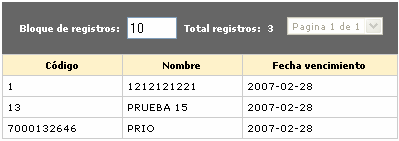
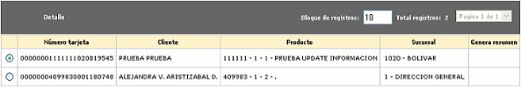
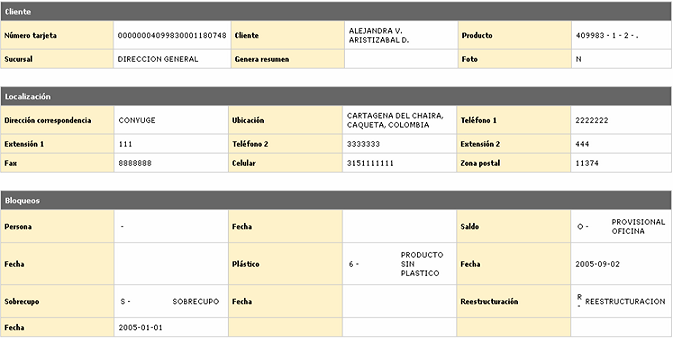
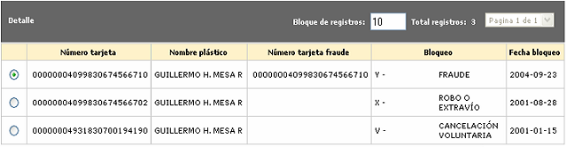
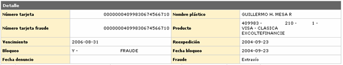
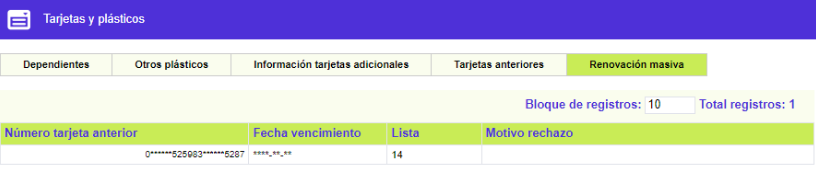

Tarjetas y plásticos
Desde este formulario que se invoca desde la Consulta centralizada de tarjeta, se puede consultar la información de la tarjeta, relacionada con las tarjetas dependientes de la actual, otros plásticos adicionales, entregados al cliente junto con la tarjeta de crédito, los datos de las tarjetas adicionales cubiertas, los números de tarjetas anteriores que ha tenido la tarjeta, como resultado de las diferentes solicitudes hechas sobre la misma, y finalmente la información sobre las las renovaciones másivas que ha presentado la tarjeta,
Por defecto, cuando el actor ingresa a la opción de tarjetas y plásticos el formulario se despliega en el tab dependientes.


Descripción de campos
|
Número tarjeta |
Campo que muestra, en caso de existir, el número asignado a las diferentes tarjetas extendidas o amparadas que dependen de la tarjeta que se está consultando y aplica solo para tarjetas principales. |
Nombre cliente |
Este campo despliega el nombre del cliente titular de cada una de las tarjetas dependientes. |
Producto |
Campo que indica el producto (bin, segmento, grupo de afinidad) al que pertenece la tarjeta dependiente. |
Fecha vencimiento |
Este campo contiene la fecha de vencimiento o validez de cada una de las tarjetas dependientes. |
Cupo asignado |
Campo en el que se muestra el monto total del cupo asignado a cada una de las tarjetas dependientes. |
Disponible |
Este campo indica el monto hasta por el cual puede hacer utilizaciones cada tarjeta dependiente, teniendo en cuenta el cupo asignado y los consumos efectuados por cada una de ellas. |
Otros plásticos : Al invocar el enlace, se despliega un nuevo formulario con la información de aquellos plásticos que, adicionalmente a la tarjeta de crédito propiamente dicha, le han sido entregados por la entidad al cliente titular de la tarjeta consultada, de acuerdo con los parámetros del producto la que pertenece la misma.


Descripción de campos
Código |
Este campo contiene el código que identifica cada uno de los otros plásticos entregados al titular de la tarjeta. |
Nombre |
Campo que indica el nombre o denominación asociado con cada uno de los plástico anteriores. |
Fecha vencimiento |
Este campo contiene la fecha hasta la cual tiene validez cada uno de los otros plásticos entregados al cliente. |
Información Tarjetas adicionales: si el actor invoca el hipervínculo Tarjetas adicionales, se despliega un nuevo formulario en el cual se muestra la información de las tarjetas tipo adicional a cargo de la tarjeta consultada, y que solo aplica para tarjetas principales.

Descripción de campos
|
Número tarjeta |
Campo que muestra, en caso de existir, el número asignado a las diferentes tarjetas adicionales cubiertas por la tarjeta que se está consultando y aplica solo para tarjetas principales. |
Nombre cliente |
Este campo despliega el nombre del cliente titular de cada una de las tarjetas adicionales. |
Producto |
Campo que indica el producto (bin, segmento, grupo de afinidad) al que pertenece la tarjeta adicional. |
Sucursal |
Este campo contiene la sucursal de radicación asociada con cada tarjeta adicional. |
Genera resumen |
Campo en el que se muestra si para la tarjeta adicional se debe originar o no un resumen con el movimiento de la tarjeta adicional, durante el proceso de generación de los extractos. |
El formulario contiene un botón que permite ver el detalle de cualquiera de las tarjetas adicionales seleccionadas por el usuario, mostrando la información agrupada en tres bloques de datos: cliente, localización y bloqueos.

Descripción de campos
|
Número tarjeta |
Campo que muestra, en caso de existir, el número asignado a las diferentes tarjetas adicionales cubiertas por la tarjeta que se está consultando y aplica solo para tarjetas principales. |
Nombre cliente |
Este campo despliega el nombre del cliente titular de cada una de las tarjetas adicionales. |
Producto |
Campo que indica el producto (bin, segmento, grupo de afinidad) al que pertenece la tarjeta adicional. |
Sucursal |
Este campo contiene la sucursal de radicación asociada con cada tarjeta adicional. |
Genera resumen |
Campo en el que se muestra si para la tarjeta adicional se debe originar o no un resumen con el movimiento de la tarjeta adicional, durante el proceso de generación de los extractos. |
Foto |
Este campo indica si el plástico de la tarjeta adicional entregada al cliente lleva o no impresa la foto del mismo. |
Dirección correspondencia |
Campo que contiene la dirección del titular de la tarjeta adicional, a donde es posible localizarlo o enviarle correspondencia comercial. |
Ubicación |
En este campo se muestra la ubicación geográfica a la que pertence la dirección anterior. |
Teléfono 1 / 2 |
Campos que contienen respectivamente los números telefónicos en los que es posible localizar o contactar al cliente titular de la tarjeta adicional. |
Extensión 1 / 2 |
En estos campos se muestra si es el caso el número de la extensión asociada con cada uno de los teléfonos anteriores. |
Fax |
Campo que despliega el número del fax al cual es posible enviar comunicaciones al cliente. |
Celular |
Este campo contiene el número del teléfono celular del cliente titular de la tarjeta adicional consultada. |
Zona postal |
Campo que muestra la zona postal a la cual pertenecen la dirección y ubicación del cliente titular de la tarjeta adicional. |
Persona / fecha |
Esta dupla de campos contiene en caso de existir, el más reciente bloqueo aplicado sobre el cliente titular de la tarjeta adicional y la fecha en la cual se registró en el sistema |
Saldo / fecha |
Dupla de campos que despliegan el mas reciente bloqueo aplicado sobre el saldo de la tarjeta adicional y la fecha de su registro. |
Plástico / fecha |
En esta dupla de campos se señala el más reciente bloqueo reportado sobre el plástico y la fecha en que se registró en el sistema. |
Sobrecupo / fecha |
Campos que indican el más reciente bloqueo que se aplicó a la tarjeta adicional por haber incurrido en sobre cupo y la fecha en la cual se registró. |
Reestructuración / fecha |
Estos campos despliegan el mas reciente bloqueo por reestructuración o refinanciación que tuvo la tarjeta y la fecha de su aplicación. |
Tarjetas anteriores : si el actor invoca el hipervínculo tarjetas anteriores, se despliega un nuevo formulario que contiene la información histórica de los distintos números de tarjeta que la tarjeta actual ha tenido desde el momento en que se aprobó al cliente la solicitud del nuevo crédito y se le asignó un número a la tarjeta por primera vez.

Descripción de campos
Número tarjeta |
Este campo indica los diferentes números de tarjeta que ha tenido anteriormente la tarjeta que se está consultando. |
Nombre plástico |
Campo que contiene el nombre realzado o asociado con cada una de las tarjetas anteriores. |
Número tarjeta fraude |
En caso que el cliente haya reportado un fraude con su tarjeta y por esta causa se le haya asignado una nueva tarjeta, en este campo se muestra el número de la tarjeta con la cual se efectuó dicho fraude. |
Bloqueo |
Campo que contiene la última causal de bloqueo que se le aplicó a cada una de las tarjetas anteriores del cliente. |
Fecha bloqueo |
En este campo se muestra la fecha en la cual se registró en el sistema el bloqueo a la tarjeta. |
Al igual que el formulario de tarjetas adicionales, este también contiene un botón de detalle que permite ver información más completa relacionada con cada una de las tarjetas anteriores que además de los campos ya mencionados contiene el producto, fecha de vencimiento, fecha reexpedición, fecha denundio y el tipo de fraude.

Descripción de campos
Producto |
Este campo muestra el bin, segmento y grupo de afinidad al cual pertenece la tarjeta anterior. |
Vencimiento |
Campo que contiene la fecha de vencimiento que tenía la tarjeta anterior al momento de haber sido bloqueada. |
Reexpedición |
En caso que el motivo del cambio de número hubiera sido la pérdida de la tarjeta o un fraude con la misma, en este campo se muestra la fecha en la cual se hizo la reexpedición de la nueva tarjeta entregada al cliente. |
Fecha denuncio |
Campo que contiene la fecha en la cual el cliente presentó el denuncio por la pérdida de la tarjeta o por el fraude cometido con la misma. |
Fraude |
En este campo se muestra si el evento que originó la reexpedición fue pérdida o robo de la tarjeta ó un fraude. |
Renovaciones masivas: si el actor invoca el hipervínculo renovaciones masivas, se despliega un nuevo formulario que contiene la información histórica de las diferentes ocasiones en las cuales la tarjeta ha sido renovada en forma masiva por la entidad, de acuerdo con sus políticas internas.

Descripción de campos
Número tarjeta anterior |
Este campo indica el número que tenía asignado la tarjeta antes de la renovación. |
Fecha vencimiento |
Campo que contiene la fecha de vencimiento que tenía la tarjeta antes de ser renovada. |
Lista |
Este campo muestra el nombr de la lista en la cual estaba contenida la tarjeta y de donde fue seleccionada para aplicarle el proceso de renovación masiva. |
Motivo rechazo |
Si la renovación no se hace o se rechaza por el sistema, en este campo se muestra la causal que origina este evento. |